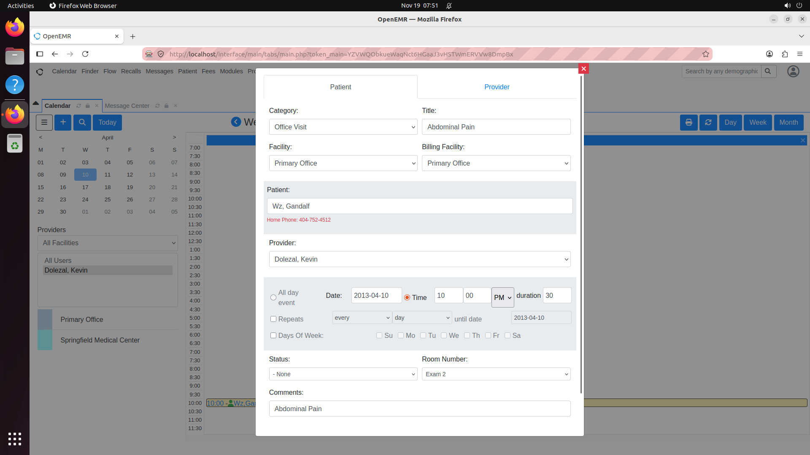

With guidance and rubrics
Agent Pi agent
Model gemini-3.8-flash
Runtime (h:mm:ss) 0:25:54
Total tokens 23,068,488
Browse screenshots (39 frames)

Previous
1 / 39 · frame_00000.png 2 / 39 · frame_00001.png 3 / 39 · frame_00002.png 4 / 39 · frame_00003.png 5 / 39 · frame_00004.png 6 / 39 · frame_00005.png 7 / 39 · frame_00006.png 8 / 39 · frame_00007.png 9 / 39 · frame_00008.png 10 / 39 · frame_00009.png 11 / 39 · frame_00010.png 12 / 39 · frame_00011.png 13 / 39 · frame_00012.png 14 / 39 · frame_00013.png 15 / 39 · frame_00014.png 16 / 39 · frame_00015.png 17 / 39 · frame_00016.png 18 / 39 · frame_00017.png 19 / 39 · frame_00018.png 20 / 39 · frame_00019.png 21 / 39 · frame_00020.png 22 / 39 · frame_00021.png 23 / 39 · frame_00022.png 24 / 39 · frame_00023.png 25 / 39 · frame_00024.png 26 / 39 · frame_00025.png 27 / 39 · frame_00026.png 28 / 39 · frame_00027.png 29 / 39 · frame_00028.png 30 / 39 · frame_00029.png 31 / 39 · frame_00030.png 32 / 39 · frame_00031.png 33 / 39 · frame_00032.png 34 / 39 · frame_00033.png 35 / 39 · frame_00034.png 36 / 39 · frame_00035.png 37 / 39 · frame_00036.png 38 / 39 · frame_00037.png 39 / 39 · frame_00038.png Next
All screenshots frame_00000.png frame_00001.png frame_00002.png frame_00003.png frame_00004.png frame_00005.png frame_00006.png frame_00007.png frame_00008.png frame_00009.png frame_00010.png frame_00011.png frame_00012.png frame_00013.png frame_00014.png frame_00015.png frame_00016.png frame_00017.png frame_00018.png frame_00019.png frame_00020.png frame_00021.png frame_00022.png frame_00023.png frame_00024.png frame_00025.png frame_00026.png frame_00027.png frame_00028.png frame_00029.png frame_00030.png frame_00031.png frame_00032.png frame_00033.png frame_00034.png frame_00035.png frame_00036.png frame_00037.png frame_00038.png
Browse trajectory events (471 events)
Previous event
Event
Next event
Without guidance or rubrics
Agent Pi agent
Model gemini-3.8-flash
Runtime (h:mm:ss) 0:35:22
Total tokens 18,917,119
Browse screenshots (37 frames)
Previous
1 / 37 · frame_00000.png 2 / 37 · frame_00001.png 3 / 37 · frame_00002.png 4 / 37 · frame_00003.png 5 / 37 · frame_00004.png 6 / 37 · frame_00005.png 7 / 37 · frame_00006.png 8 / 37 · frame_00007.png 9 / 37 · frame_00008.png 10 / 37 · frame_00009.png 11 / 37 · frame_00010.png 12 / 37 · frame_00011.png 13 / 37 · frame_00012.png 14 / 37 · frame_00013.png 15 / 37 · frame_00014.png 16 / 37 · frame_00015.png 17 / 37 · frame_00016.png 18 / 37 · frame_00017.png 19 / 37 · frame_00018.png 20 / 37 · frame_00019.png 21 / 37 · frame_00020.png 22 / 37 · frame_00021.png 23 / 37 · frame_00022.png 24 / 37 · frame_00023.png 25 / 37 · frame_00024.png 26 / 37 · frame_00025.png 27 / 37 · frame_00026.png 28 / 37 · frame_00027.png 29 / 37 · frame_00028.png 30 / 37 · frame_00029.png 31 / 37 · frame_00030.png 32 / 37 · frame_00031.png 33 / 37 · frame_00032.png 34 / 37 · frame_00033.png 35 / 37 · frame_00034.png 36 / 37 · frame_00035.png 37 / 37 · frame_00036.png Next
All screenshots frame_00000.png frame_00001.png frame_00002.png frame_00003.png frame_00004.png frame_00005.png frame_00006.png frame_00007.png frame_00008.png frame_00009.png frame_00010.png frame_00011.png frame_00012.png frame_00013.png frame_00014.png frame_00015.png frame_00016.png frame_00017.png frame_00018.png frame_00019.png frame_00020.png frame_00021.png frame_00022.png frame_00023.png frame_00024.png frame_00025.png frame_00026.png frame_00027.png frame_00028.png frame_00029.png frame_00030.png frame_00031.png frame_00032.png frame_00033.png frame_00034.png frame_00035.png frame_00036.png
Browse trajectory events (439 events)
Previous event
Event
Next event
Runtime covers Pi’s execution. Total tokens include input and output, counting cached input once. Published trajectories omit session credentials and redact authentication-related payloads.